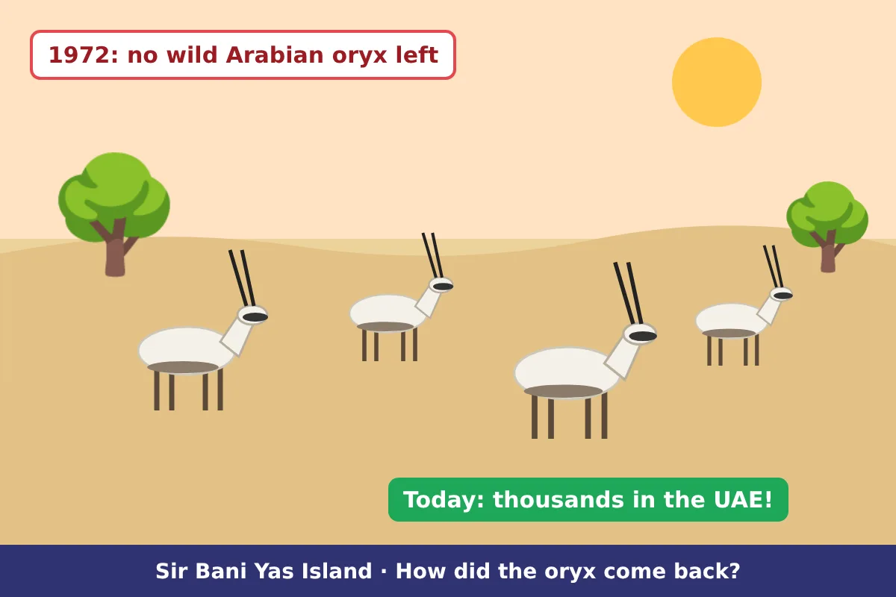
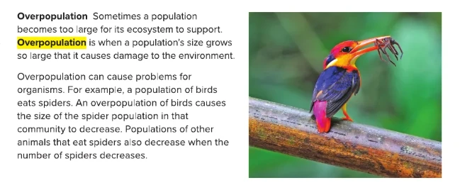
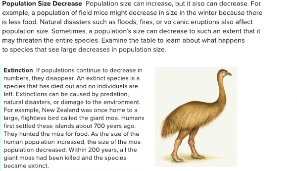
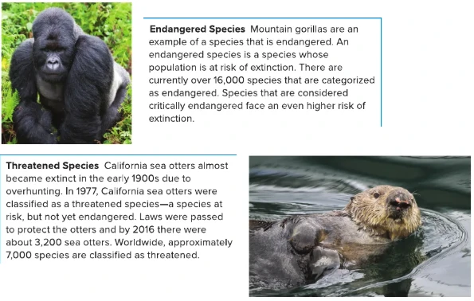

Overpopulation and Population Decrease
Lesson 1 · Resources in Ecosystems (part 3): extinct, endangered and threatened species
 UAE NATIONAL CHARTER · الميثاق الوطني
UAE NATIONAL CHARTER · الميثاق الوطنيMeet your UAE Values Team
Five friends will coach you through today's species-saver mission. Tap a character to discover their job today!
Lesson map · 45 minutes · tap any activity
Objectives, success criteria & key words
Explain how changes in population size affect ecosystems.
- I can explain what overpopulation is and how it affects other populations.
- I can give reasons why a population might decrease.
- I can tell the difference between extinct, endangered and threatened species.
- I can describe how people can help a population recover.
Kickoff: starter + attendance

- Say “present” and settle in your seat.
- Think: name an animal that no longer lives on Earth. Why did it disappear?
- Answer the 5 true/false questions on the next slide on your own: no peeking at a friend's answer!
Pre-assessment: what do you know?
Hook: the oryx mystery

A morning on Sir Bani Yas Island…
Shamma watches a herd of white Arabian oryx walking across the sand. The ranger smiles: “Did you know that by 1972 there were no wild Arabian oryx left anywhere in the world?”
Shamma is amazed: “Then how are they here today?”
What could make a population disappear, and how could it come back?
Watch: overpopulation and species at risk (2.5 min)
Encounter: extinct, endangered or threatened?
Tap each species to choose: extinct, ENDANGERED or threatened. Keep tapping to change.
Extinct: no individuals left.
Endangered: at risk of extinction (critically endangered = even higher risk).
Threatened: at risk, but not yet endangered.
Good news: the Arabian oryx was once extinct in the wild, but thanks to people it is now only threatened!
The birthday cake (the unconventional version)
One birthday cake is enough for 20 guests. If 80 guests arrive, the cake runs out, the room is crowded and the party is spoiled. That is overpopulation! If guests go home one by one until nobody is left, the party is “extinct”.
Overpopulation is when a population's size grows so large that it causes damage to the environment. An extinct species has died out and no individuals are left.
Textbook: overpopulation

Textbook: population decrease and extinction

Textbook: endangered and threatened species

Simulation: too many birds!
Simulation: rescue the oryx
You look after a population of Arabian oryx. Each event changes the population. Watch the status: safe, threatened, endangered… or extinct.
Warning: once a species is extinct, it can never come back!
UAE species savers
These species need protection. Guess each one's status and how the UAE helps, then tap Reveal.
Arabian oryx
Dugong
Hawksbill turtle
Arabian leopard
Lab: mice in winter
- Each mouse needs 2 beans to survive one season.
- Summer: put 40 beans in the cup. How many mice can survive?
- Winter: there is less food. Put only 16 beans in the cup.
- Flood: half of the winter food is washed away. Use 8 beans.
| Season | Beans (food) | Mice that survive |
|---|---|---|
| Summer | 40 | 20 mice |
| Winter | 16 | 8 mice (population decrease) |
| Winter + flood | 8 | 4 mice (natural disaster) |
Pause and check
Formative check: tap an answer. Wrong? Read the hint and try again!
Put the moa story in order
How did the giant moa become extinct? Say the order with your partner, then tap the events from first to last. Tap a numbered event to undo.
Population changes worksheet (1/2)
B. A species at risk of extinction
C. A species at risk, but not yet endangered
D. A population so large it damages the environment
E. A flood, fire or volcanic eruption
Population changes worksheet (2/2)
| What happens? | The population will… |
|---|---|
| Spiders, when the bird population doubles | |
| Field mice, when winter comes | |
| Sea otters, after protection laws are passed | |
| Trees in a forest, after a big fire | |
| Arabian oryx, after release into protected reserves | |
| Moas, when humans hunted them for food |
How did the Arabian oryx go from extinct in the wild to threatened? Use population, extinct and protect.
✓ Hunting made the wild oryx population decrease until it was extinct in the wild by 1972.
✓ A few oryx survived in zoos and breeding centres, where they were bred.
✓ They were released into reserves where people protect them, so the population grew and is now only threatened.
Green, orange or purple? Choose your level
Green · Support
- Complete: “An ____ species has no individuals left.”
- Name one natural disaster.
- True or false: the mountain gorilla is extinct.
- Which UAE animal came back from extinction in the wild?
1. extinct
2. flood, fire or volcanic eruption
3. False (it is endangered)
4. the Arabian oryx
Orange · At level
- Explain how an overpopulation of birds affects spiders and lizards.
- Compare threatened and endangered species.
- Give two ways the UAE protects species at risk.
1. Birds eat more spiders, so spiders decrease; lizards that eat spiders then decrease too.
2. Both are at risk; endangered species are closer to extinction.
3. Any two: reserves (Sir Bani Yas), breeding centres (Sharjah), protected beaches (Saadiyat), protecting seagrass for dugongs.
Purple · Challenge
- Why is it harder to save a species when only a few individuals are left?
- Can overpopulation of one species cause another to become endangered? Explain.
- Plan a campaign to protect hawksbill turtles in the UAE.
1. Few individuals means few babies; one disaster or disease could wipe them all out.
2. Yes: if a predator overpopulates, it can eat so much prey that the prey becomes endangered.
3. e.g. protect nesting beaches, reduce plastic, turn off beach lights at night, teach others.
Summative: Species Saver quiz
Mystery solved!
Hunting made the wild oryx population DECREASE until, by 1972, the species was EXTINCT IN THE WILD. But a few oryx still lived in zoos and breeding centres. People bred them and released them into PROTECTED reserves like Sir Bani Yas Island. The population grew again, and today the Arabian oryx is only THREATENED. People saved a species!
I can explain what overpopulation is and how it affects other populations.
I can give reasons why a population might decrease.
I can tell the difference between extinct, endangered and threatened species.
I can describe how people can help a population recover.
Which value did you show today?
Tap the character whose value you showed in this lesson. Then tell your partner one real example!
Protect what you love
The UAE brought the oryx back from the edge. When we care and work together, nothing is lost forever. You can be a species saver too!